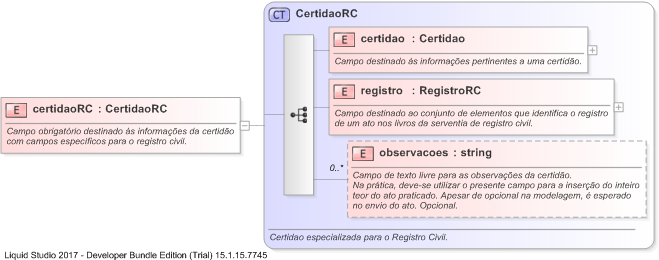

| Definition Type: | Element |
| Name: | certidaoRC |
| Namespace: | http://www.tjsc.jus.br/selo/XMLSchema |
| Type: | nsS:CertidaoRC |
| Containing Schema: | xsCRegistroTD.xsd |
| MinOccurs | (1) |
| MaxOccurs | (1) |
| Abstract | |
| Documentation: | Campo obrigatório destinado às informações da certidão com campos específicos para o registro civil. |
|  |
|
|
|||||||||||||||||
|
|